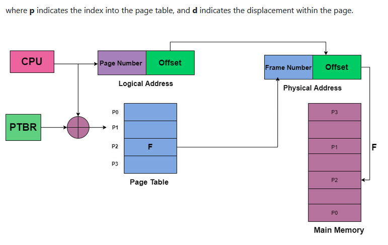
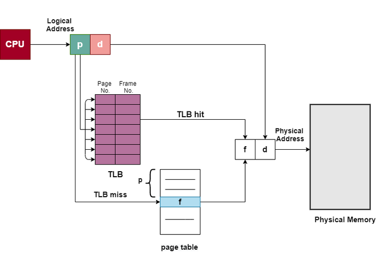

Paging Technique
Paging is a memory management scheme that eliminates the need for contiguous allocation of physical memory. This scheme permits the physical address space of a process to be non – contiguous.
Logical Address or Virtual Address (represented in bits): An address generated by the CPU
Logical Address Space or Virtual Address Space( represented in words or bytes): The set of all logical addresses generated by a program
Physical Address (represented in bits): An address actually available on memory unit
Physical Address Space (represented in words or bytes): The set of all physical addresses corresponding to the logical addresses.
Example:
If Logical Address = 31 bit, then Logical Address Space = 231 words = 2 G words (1 G = 230)
If Logical Address Space = 128 M words = 27 * 220 words, then Logical Address = log2 227 = 27 bits
If Physical Address = 22 bit, then Physical Address Space = 222 words = 4 M words (1 M = 220)
If Physical Address Space = 16 M words = 24 * 220 words, then Physical Address = log2 224 = 24 bits
The mapping from virtual to physical address is done by the memory management unit (MMU) which is a hardware device and this mapping is known as paging technique.
- The Physical Address Space is conceptually divided into a number of fixed-size blocks, called frames.
- The Logical address Space is also splitted into fixed-size blocks, called pages.
- Page Size = Frame Size

Address generated by CPU is divided into Page number(p): Number of bits required to represent the pages in Logical Address Space or Page number Page offset(d): Number of bits required to represent particular word in a page or page size of Logical Address Space or word number of a page or page offset. Physical Address is divided into Frame number(f): Number of bits required to represent the frame of Physical Address Space or Frame number. Frame offset(d): Number of bits required to represent particular word in a frame or frame size of Physical Address Space or word number of a frame or frame offset.

Translation of look-aside buffer(TLB)
There is the standard solution for the above problem that is to use a special, small, and fast-lookup hardware cache that is commonly known as Translation of look-aside buffer(TLB). TLB is associative and high-speed memory. Each entry in the TLB mainly consists of two parts: a key(that is the tag) and a value. When associative memory is presented with an item, then the item is compared with all keys simultaneously. In case if the item is found then the corresponding value is returned. The search with TLB is fast though the hardware is expensive. The number of entries in the TLB is small and generally lies in between 64 and 1024. TLB is used with Page Tables in the following ways: The TLB contains only a few of the page-table entries. Whenever the logical address is generated by the CPU then its page number is presented to the TLB. If the page number is found, then its frame number is immediately available and is used in order to access the memory. The above whole task may take less than 10 percent longer than would if an unmapped memory reference were used. In case if the page number is not in the TLB (which is known as TLB miss), then a memory reference to the Page table must be made. When the frame number is obtained it can be used to access the memory. Additionally, page number and frame number is added to the TLB so that they will be found quickly on the next reference. In case if the TLB is already full of entries then the Operating system must select one for replacement. TLB allows some entries to be wired down, which means they cannot be removed from the TLB. Typically TLB entries for the kernel code are wired down.
Advantages of Paging
- Paging mainly allows to storage of parts of a single process in a non-contiguous fashion.
- With the help of Paging, the problem of external fragmentation is solved.
- Paging is one of the simplest algorithms for memory management.
Disadvantages of Paging
- In Paging, sometimes the page table consumes more memory.
- Internal fragmentation is caused by this technique.
- There is an increase in time taken to fetch the instruction since now two memory accesses are required.